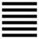

Thuần Càn (乾 qián)
Dịch: Càn (có bốn đức – đặc tính): đầu tiên và lớn, hanh thông, thích đáng, chính và bền.
Giảng: Văn Vương cho rằng bói được quẻ này thì rất tốt, hanh thông, có lợi và tất giữ vững được cho tới lúc cuối cùng.
Về sau, tác giả Thóan truyện (tương truyền là Khổng tử, nhưng không chắc), cho quẻ này một ý nghĩa về vũ trụ, Càn gồm sáu hào đều là dương cả, có nghĩa rất cương kiện, tượng trưng cho trời. Trời có đức “ nguyên” vì là nguồn gốc của vạn vật; có đức “hanh” vì làm ra mây, mưa để cho vạn vật sinh trưởng đến vô cùng, có đức “lợi” và “trinh” vì biến hóa, khiến cho vật gì cũng giữ được bẩm tính được nguyên khí cho thái hòa (cực hòa).
Bậc thánh nhân đứng đầu muôn vật, theo đạo Càn thì thiên hạ bình an vô sự.
Tác giả Văn Ngôn truyện cho quẻ này thêm một ý nghĩa nữa về nhân sinh, đạo đức. Càn tượng trưng cho người quân tử. Người quân tử có bốn đức. Nhân, đức lớn nhất, gốc của lòng người, tức như đức “nguyên” của trời. Lễ, là hợp với đạo lý, hợp với đạo lý thì hanh thông, cho nên lễ tức như đức “hanh” của trời.
Nghĩa, đức này làm cho mọi người được vui vẻ sung sướng, tức như đức “lợi” của trời.
Trí, là sáng suốt, biết rõ thị phị, có biết thị phi mới làm được mọi việc cho nên nó là đức cốt cán, cũng như đức “trinh” chính và bền – của trời.
Nguyên, hanh, lợi, trinh mà giảng thành nhân, lễ, nghĩa, trí, (bốn đức chính của đạo Nho) thì rõ là chịu ảnh hưởng nặng của Nho gia mà ý nghĩa và công dụng của Dịch đã thay đổi khá nhiều rồi.
Sơ cửu: Tiềm long vật dụng.
Dịch: Hào 1 dương: Rồng còn ẩn náu, chưa (đem tài ra) dùng được.
Giảng: Người Trung Hoa cho con rồng là thần vật, rất biến hóa, lúc ẩn lúc hiện, mà lại thuộc về lòai dương, cho nên chu Công dùng nó để cho ta dễ thấy Ý nghĩa các hào – đều là dương cả - trong quẻ Càn.
Hào 1, ở dưới thấp nhất, cho nên ví nó với con rồng còn nấp ở dưới vực sâu, chưa thể làm mây biến hóa được, còn phải đợi thời. Ý nghĩa rất rõ, Tiểu tượng truyện không giảng gì thêm. Còn Văn Ngôn truyện thì bàn rộng ra về cách sử sự của bâc thánh nhân, người quân tử : chưa gặp thời thì nên tu đức, luyện tài, không vì thế tục mà đổi chí, không cầu danh, ở ẩn, không ai biết mình cũng không buồn, không gì lay chuyển được chí của mình.
Cửu nhị: Hiện long tại điền, lợi kiến đại nhân.
Dịch: Hào 2, dương: rồng đã hiện ở cánh đồng, ra mắt đại nhân thì lợi.
Giảng: hào 2 là dương, ở giữa nội quái là đắc trung, như vậy là gặp thời, tài đức giúp ích cho đời được: lại thêm hào ứng với nó là hào 5, cũng là dương, cũng đắc trung (vì ở giữa ngọai quái); cho nên hào 2 có thể ví với con rồng đã rời vực mà hiện lên cánh đồng; mà cũng như người có tài đức gặp thời, nên kiến đại nhân).
Văn ngôn: khuyên người có tài đức gặp thời này nên giữ đức tín, đức thận trọng trong ngôn, hành, tránh tà bậy, giữ lòng thành, giúp đời mà không khoe công, như vậy là giữ được đức trung chính của hào 2.
Cửu tam: Quân tử chung nhật càn càn, tịch dịch nhược. Lệ, vô cữu.
Dịch: hào 3, dương: Người quân tử mỗi ngày hăng hái tự cường, đến tối vẫn còn thận trọng như lo sợ. Nguy hiểm, nhưng không tôi lỗi.
Giảng: Hào 3 là dương lại ở vị ngôi dương, như vậy là rất cương, mà không đắc trung. Hơn nữa, nó ở trên cùng nội quái mà chưa tiến lên ngọai quái, nghĩa là ở một chỗ chông chênh, rất khó xử, cho nên bảo là nguy hiểm (lệ). Nhưng nó vẫn là quân tử, có đức tự cường không ngừng, rất thận trọng, lúc nào cũng như lo sợ, cho nên tuy gặp thời nguy mà cũng không đến nỗi tội lỗi.
Văn ngôn bàn thêm: người quân tử giữ trung tín để tiến đức; sửa lời nói (lập ngôn) vững lòng thành để lập sự nghiệp...nhờ vậy mà thấu được đạo lý, giữ được điều nghĩa làm được sự nghiệp tới cùng, ở địa vị cao mà không kiêu, địa vị thấp mà không lo. Lời khuyên đó cũng tựa như lời khuyên ở hào 2.
Cửu tứ: Hoặc dược, tại uyên, vô cữu.
Dịch: Hào 4, dương: như con rồng có khi bay nhảy, có khi nằm trong vực (biết tùy thời như thế thì) không lầm lỗi.
(Có người dịch là như con rồng có khi bay nhảy trên vực sâu, không lầm lỗi).
Giảng: Hào 4 là dương ở vị (ngôi) âm, như vậy là bất chính và bất trung; nó lại cũng như hào 3 ở địa vị chông chênh, mới rời nội quái tiến lên ngọai quái, tiến chưa chắc đã tốt mà thóai thì dở dang. Cho nên phải thận trọng xem xét thời cơ, nên tiến thì tiến (như con rồng bay nhảy) nếu không thì chờ thời (con rồng nằm trong vực), cho nên Chu Công dùng chữ “hoặc”: không nhất định.
Tuy bất chính, bất trung như nó có chất cương kiện (hào dương trong quẻ Càn) nên cũng như hào 3 là bậc quân tử, biết giữ tư cách, biết tùy thời, và rốt cuộc không có lỗi.
Hào này chỉ khác hào 3 ở chỗ nó có thể tiến được, còn hào 3 chưa thể tiến được.
Văn ngôn không giảng gì khác, chỉ khuyên người quân tử tiến đức tu nghiệp, chuẩn bị cho kịp thời để có lúc ra giúp đời.
Cửu ngũ: Phi long tại thiên, lợi kiến đại nhân.
Dịch: Hào 5, dương: Rồng bay trên trời, ra mắt kẻ đại nhân thì lợi.
Giảng: Hào 5 là dương ở vị (ngôi) dương cao nhất trong quẻ lại đắc trung (ở giữa ngọai quái), như vậy là có đủ những điều tốt, vừa cao quí vừa chính trung. Nó lại được hào 2 ở dưới ứng với nó, mà hào 2 cũng cương kiện, đắc trung như nó. Nó là hào tốt nhất trong quẻ, cho nên ví nó với con rồng bay trên trời, và ngôi của nó là ngôi chí tôn (ngôi vua).
Chữ đại nhân (người có tài đức) trỏ cả hào 5 lẫn hào 2: hai đại nhân ở hai hào đó nên gặp nhau, hợp lực với nhau thì có lợi.
Văn ngôn giảng thêm rất rõ và hay về bốn chữ lợi kiến đại nhân: “đồng thanh tương ứng, đồng khí tương cầu; nước chảy xuống thấp, lửa bén tới chỗ khô; mây bay theo rồng, gió bay theo cọp, thánh nhân xuất hiện mà vạn vật đều trông vào (…) Mọi vật đều theo loài của nó” (Đồng thanh tương ứng, đồng khí tương cầu; thủy lưu thấp, hỏa tựu táo, vân tòng long, phong tòng hổ, thánh nhân tác nhi vạn vật đổ (…) các tùy kỳ loại dã).
Thượng cửu: Kháng long hữu hối.
Dịch: Hào trên cùng, dương: Rồng lên cao quá, có hối hận.
Giảng: hào dương này ở trên cao của quẻ, cương kiện đến cùng rồi, như con rồng bay lên cao quá, không xuống được nữa, nếu vẫn còn hành động thì sẽ có điều đáng tiếc, vì lẻ thịnh quá thì tất suy, đầy thì không được lâu, (doanh bất khả cửu).
Văn ngôn : giảng thêm: Hào 5 địa vị rất quí (vì ở trên cao hơn hết) nhưng không có ngôi, cao mà không có dân (vì hào 5 là vua mới có dân), các người hiền ở dưới mình mà không giúp đỡ mình (vì hào 3 tuy ứng với hào 6 nhưng lại ở nội quái, mà giữa hào 3 và hào 6 có hào 5 là vua làm chủ hào 3 rồi) cho nên hào 6 mà họat động thì tất có điều phải ăn năn. (Lời giảng trong Văn ngôn, tác giả Hệ Từ truyển dẫn lại trong thiên thương, Chương VIII, Tiết 9).
Tóm lại thời của hào này là thời không nên họat động gì cả, sớm rút lui đi thì còn giữ được tư cách người quân tử.